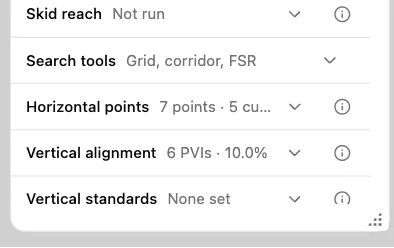
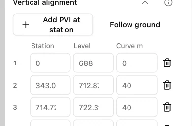
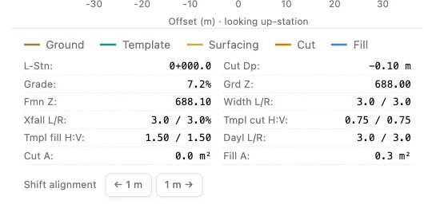

Edit a road profile elevation
Open Hillside access in the Engineering workbench on the training terrain. Use station 0 at the start of the road and the Linked overview preset.
1. Open Vertical alignment
In Design, scroll down and expand Vertical alignment. Its points of vertical intersection (PVIs) define the road profile.

2. Raise the first point
Find the level for PVI 1. Change 688.00 m to 688.10 m. In the workbench, pressing the up arrow in the field once raises it by 0.1 m.

3. Read the new formation elevation
At station 0, read Fmn Z in the cross-section detail. It now reads 688.10 m. The vertical edit moves the road surface while the ground at this station stays at 688.00 m.
